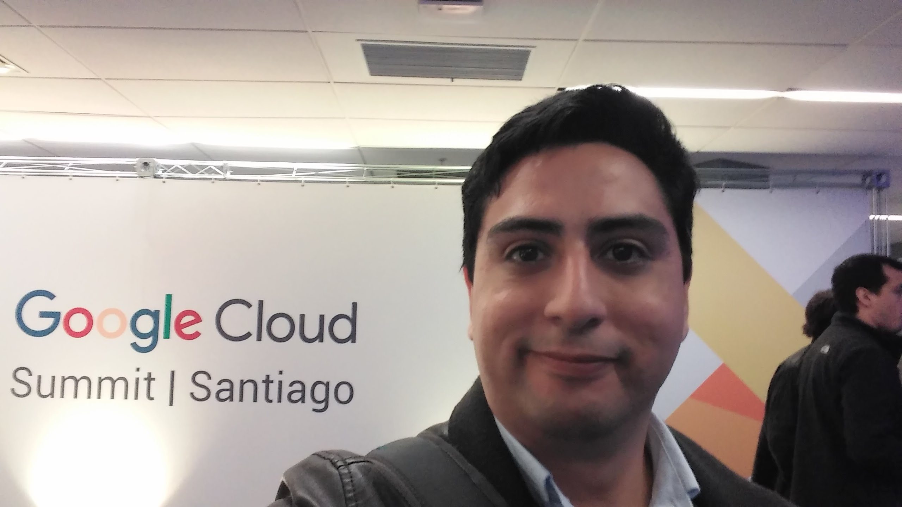
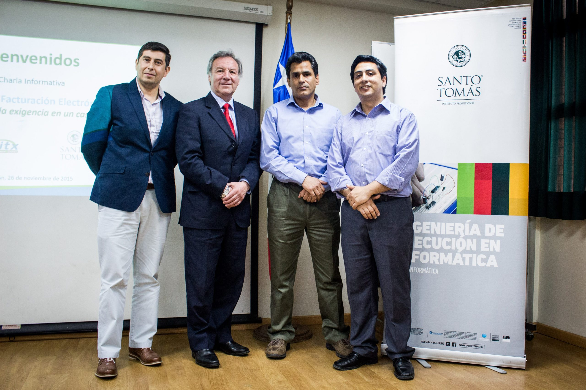
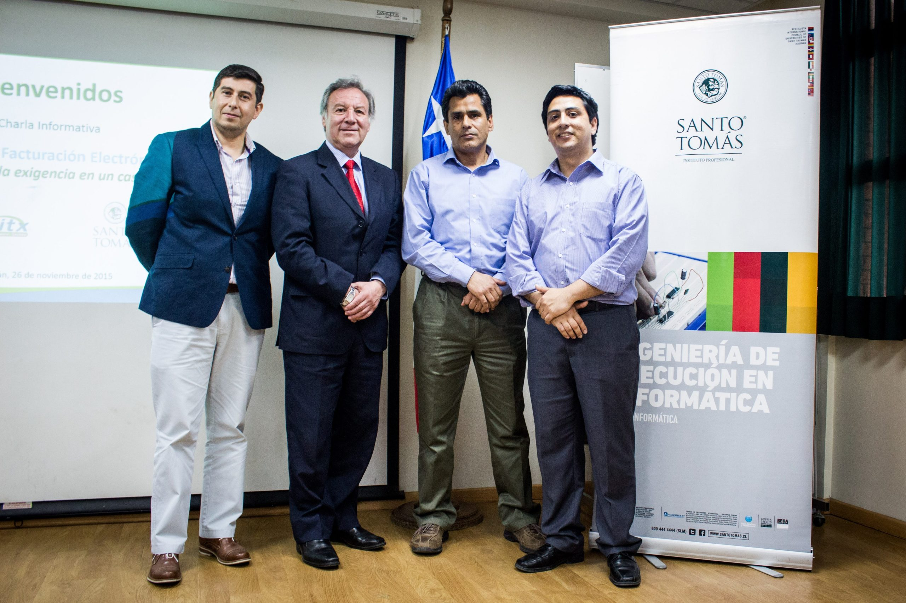

Project Management en equipos 100% remotos
Desde 2020 trabajando Full Remote
Con más de una década de experiencia en la industria del software (desde desarrollo web, SaaS hasta soluciones de IA), destaco en dirigir proyectos de software en entornos remotos.
No solo gestiono tareas y plazos; mi enfoque incluye un fuerte componente de coaching individual. Trabajo para mantener a los equipos unidos y motivados, superando obstáculos a pesar de la distancia.
En mi rol, priorizo la comunicación efectiva y constante, esencial para el éxito en el remoto. No solo resuelvo problemas, sino que también promuevo el desarrollo profesional de cada miembro, asegurando que todos se sientan valorados y conectados con los objetivos del proyecto.
Mi habilidad para integrar gestión de proyectos con desarrollo de equipo me convierte en el líder ideal para proyectos de software, garantizando no solo la entrega del producto sino también un equipo sólido y adaptado al futuro del trabajo remoto.

Soluciones de Software Basadas en Inteligencia Artificial
Comenzando en Noviembre de 2022
Como Software Project Manager en Webtronic Labs, lideré las operaciones detrás de Gloria AI, una asistente virtual diseñada para optimizar el servicio al cliente y la calificación de leads mediante Inteligencia Artificial.
En Webtronic Labs, con un diverso equipo de expertos de Latinoamérica, Estados Unidos y Europa, se unió para presentar Gloria AI en el evento eMerge Americas en abril de 2024, donde recibimos una acogida excepcional por parte del público.
En mi rol, me encargaba de gestionar el backlog, priorizar tareas, resolver problemas técnicos y operativos, y proporcionar coaching a nuestro equipo para asegurar un rendimiento óptimo. También me ocupé de establecer procedimientos claros para el trabajo y soporte al cliente.
Reportaba directamente al CEO de la empresa con informes semanales que reflejaban nuestro progreso y desafíos.
Mis inicios en la Industria
A partir del año 2010
Con una carrera de casi 10 años en Zenitx Informática ocupé diferentes posiciones desde Servicio/Soporte Técnico, Project Manager y finalmente Director de Operaciones (COO).
Zenitx Informática es una empresa familiar Chilena de desarrollo de Software a medida siendo los fabricantes y distribuidores exclusivos de Sigue® ERP a lo largo de todo el país.
En la actualidad continúo brindando servicios de consultoría especialmente en proyectos de innovación tecnológica.



 
